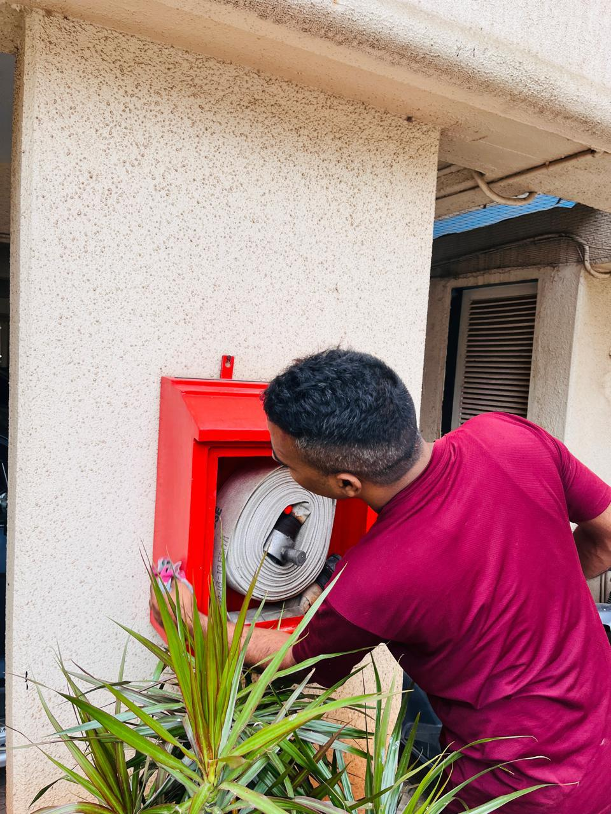

Compliance · Fire Safety Guide
Form B is part of the ongoing fire and life-safety compliance process for eligible buildings in Maharashtra. It is not the same thing as a Fire NOC, and it should not be treated as a certificate that can be issued without checking the actual condition of the premises.

Form B is associated with periodic maintenance and compliance reporting under Maharashtra's fire-prevention framework. It records the status of applicable fire-prevention and life-safety measures after the required checks. A Fire NOC is a separate approval within the applicable building and fire-authority process. The two terms should not be used interchangeably.
Keep the latest approved fire-safety drawings and previous compliance records available. Make sure access to fire pumps, pump rooms, hydrant points, hose reels, extinguishers, alarm panels, emergency exits and refuge areas is arranged. Keep maintenance logs, test records, equipment service tags and details of unresolved defects ready for review.
The inspection scope depends on the building, its approved fire strategy and the applicable requirements. It may include checking access and egress routes, fire doors, alarm and detection equipment, hydrant and sprinkler installations, pumps, extinguishers, emergency lighting, signage and maintenance documentation. A visual check alone cannot replace the prescribed functional tests.
Typical problems include blocked fire exits, inaccessible equipment, expired or missing service records, disabled alarm zones, damaged hose reels, pump faults and changes to the building that were not reflected in the fire-safety documentation. Record each defect, assign an owner and retain evidence of corrective action.
Nominate one building representative; gather previous Form A/Form B and inspection records; make all equipment rooms accessible; inform occupants about the inspection; do not conceal or temporarily bypass defects; and ask the licensed professional to explain any non-compliance and the corrective action required.
The inspection and certification route must match the building's category, the current Maharashtra requirements and the scope permitted by the agency's licence. Confirm the current process with the relevant authority and a properly licensed professional before relying on a certificate or deadline.
No. Form B is a periodic fire-safety compliance document; a Fire NOC is a separate approval in the applicable process.
Do not assume so. The required checks, records and certification process must follow the current rules and the scope of the licensed agency.
Previous certificates, drawings, maintenance logs, equipment records, access to fire systems and a list of known defects and their corrective actions.
Requirements depend on the building, installed systems and applicable rules. Speak with the team about an assessment or maintenance visit.
This guide is general information, not a substitute for the current law, the approved fire strategy for a property or advice from the relevant authority. Confirm requirements for the specific premises before acting.
← Back to all fire safety guides · Browse FAQs and resources